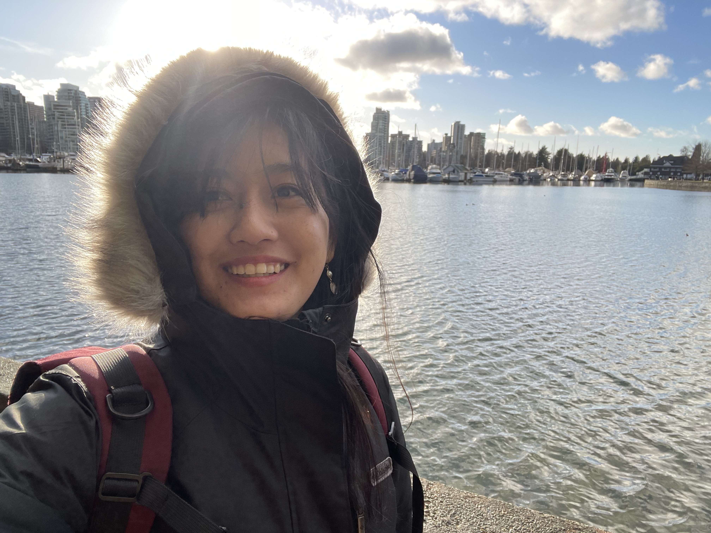

Ph.D. Candidate in Computer Science · Howard University
I am a Computer Science Ph.D. candidate at Howard University, advised by Dr. Jiang Li and Dr. Danda B. Rawat. My research sits at the intersection of computer vision, multimodal AI, and physical world understanding.
Before starting my Ph.D., I earned my B.Sc. in Computer Science and Information Technology from Tribhuvan University in Nepal.

Vision, language, and touch integration for physical world understanding and material perception.
Feature refinement and representation learning for robust visual identity matching.
Touch-vision-language models for classifying physical properties beyond visual appearance.
Interpretable, neuro-symbolic, and safe AI systems for collaborative human-autonomy settings.
Explores how body-part-aware prompting can improve reliability of vision-language models for person re-identification by guiding model attention toward semantically meaningful body regions.
Extends the Touch-Vision-Language (TVL) dataset with material-type annotations to support multimodal material understanding, combining dataset development, tactile representation learning, and label quality analysis.
A lightweight, training-free feature refinement method based on leave-one-out mean centering that improves embedding quality at inference time without retraining the base model.
Uses large language models and few-shot prompting to automate risk assessment from social media data, producing interpretable scores across multiple decision dimensions.
Investigates neuro-symbolic reinforcement learning for trustworthy human-autonomy teaming, connecting learning-based control with structured reasoning for safer and more interpretable AI behavior.
Under submission
Developed a plug-and-play, training-free feature enhancement method based on leave-one-out mean centering, with identity-aware and cluster-aware variants for supervised and label-free settings.
Ongoing
Extended a touch-vision-language dataset with material annotations, built a tactile-only encoder-based classifier, and investigated agreement between LLM-generated and human-provided labels.
AWS Machine Learning University AI/ML Student Poster Session
Proposed body-part-aware prompting to guide vision-language models toward stronger localization and more robust person re-identification.
NeurIPS Women in Machine Learning Workshop
Accepted poster presentation. Proposed an automated system for risk assessment using LLMs and prompt engineering with a 0–10 scoring framework for financial stability, cybersecurity, and reputation management.
Assurance and Security for AI-enabled Systems, SPIE
Oral presentation on neuro-symbolic reinforcement learning for trustworthy human-autonomy teaming.